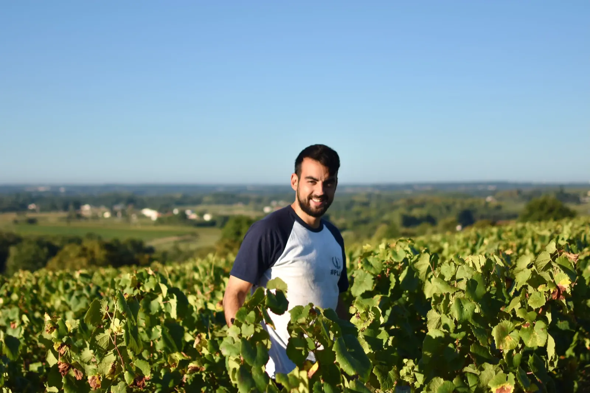
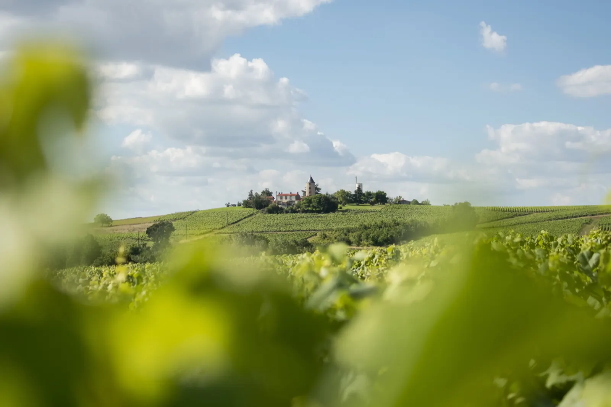
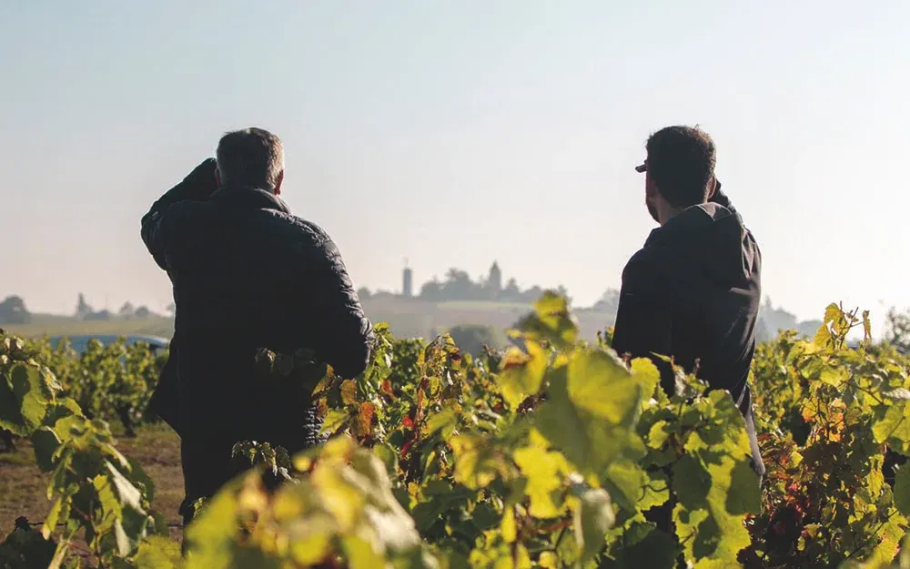
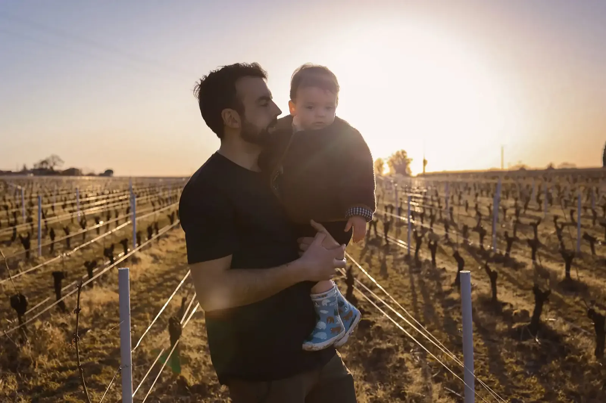
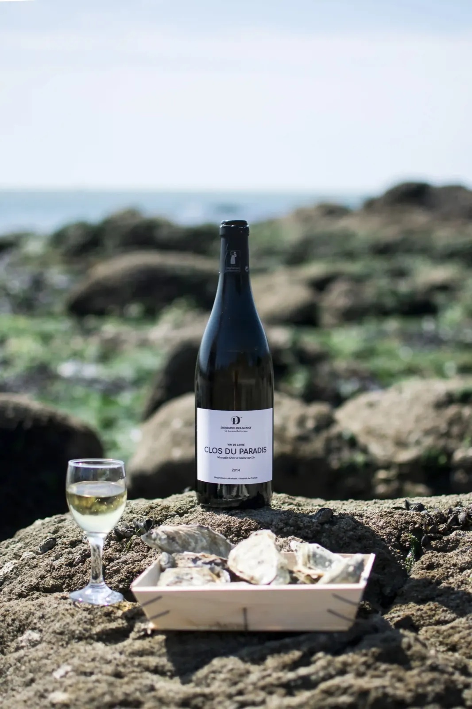
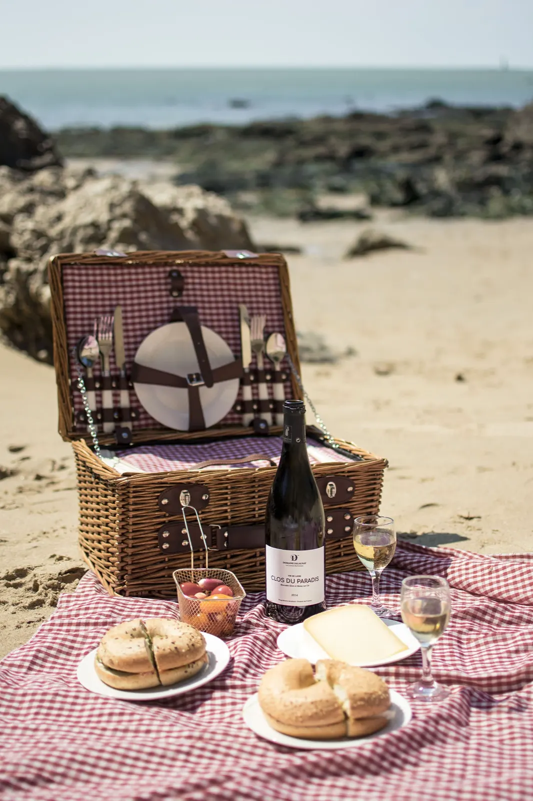
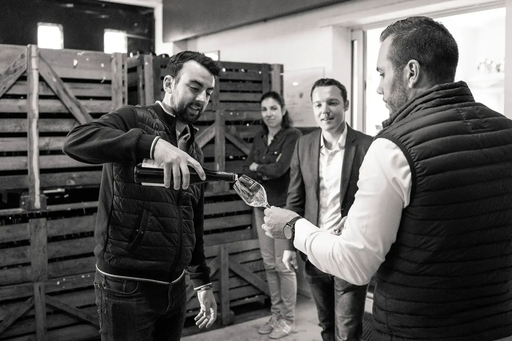
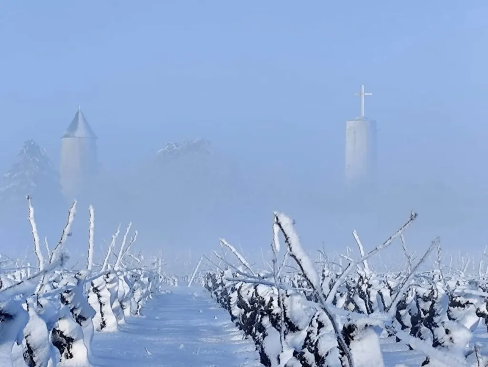
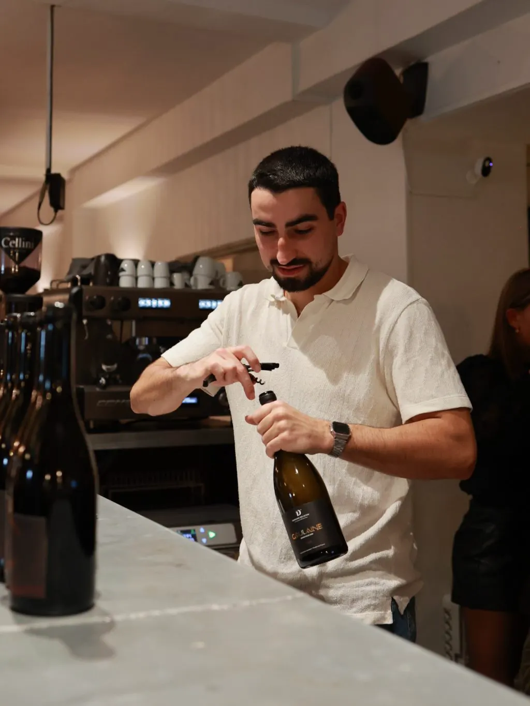

Plongez au cœur du Muscadet.

Au Moulin du Pé, chaque racine plonge dans la mémoire profonde d’un terroir unique. Depuis plus de 3 générations, le domaine façonne au Loroux-Bottereau des muscadets purs et vibrants.
- 3 générationsde vignerons autour du Moulin du Pé
- 2020Florent Delaunay reprend l’exploitation
- 30 hectaresenviron, en majorité de Melon de Bourgogne
- 24 moisd’élevage sur lies pour le cru Goulaine
- Amphiboliteset gneiss, les sols du domaine
Domaine Delaunay, au cœur du Muscadet
Au Moulin du Pé, chaque racine plonge dans la mémoire profonde d’un terroir unique.
Depuis plus de 3 générations, le Domaine Delaunay façonne au Loroux-Bottereau des muscadets purs et vibrants. Sur des sols d’amphibolites et de gneiss, il révèle toute la force d’un terroir et la finesse d’une histoire familiale.



« Je suis né en 92, pendant des vendanges, un signe du destin diront les anciens. De mon père et mon oncle, j’ai reçu les gestes, la patience et l’amour de mon terroir. »
Florent Delaunay, la nouvelle génération
J’ai grandi au cœur des vignes au Loroux-Bottereau, autour du Moulin du Pé. Très jeune, j’ai aidé mes parents à la vigne et à la cave. Après une école de commerce et une carrière commerciale, j’ai ressenti le besoin de revenir à quelque chose de plus concret, plus vivant.
Aujourd’hui, je travaille une trentaine d’hectares, majoritairement en Melon de Bourgogne, avec une volonté forte de conversion en viticulture bio et de recentrage à taille humaine. Mon objectif : des vins sincères, peu interventionnistes, qui reflètent pleinement nos terroirs.
- Briacéla formation de la reconversion
- 2017le retour au domaine, puis des stages chez des vignerons à travers la France
- 2020la reprise de l’exploitation
Les cuvées
Des muscadets Sèvre et Maine, des cuvées monocépages, deux méthodes traditionnelles et Flò, la gamme signature.
Nos muscadets Sèvre et Maine
- Le Val-FleuriMuscadet Sèvre et Maine sur lieFiche technique
- Clos du ParadisMuscadet Sèvre et MaineFiche technique
- GoulaineMuscadet Sèvre et Maine GoulaineFiche technique
- EclipseVin orange nature, 100 % Melon B.Fiche technique sur demande
Nos cuvées monocépages
- La BonnaudièreSauvignon
- Les Pièces de FromenteauChardonnay
- Les RégalesPinot Gris
- Le Clos des RochettesPinot Noir
Nos méthodes traditionnelles
- Brut Blanc75 % Chardonnay, 25 % Melon B.
- Extra Brut100 % Chardonnay
Flò, la gamme signature
- Flò RoséVin de France
- Flò RougeVin de France



Muscadet Cru Goulaine, l’expression d’un terroir unique
Né sur les sols d’amphibolites des coteaux du Loroux-Bottereau, notre Goulaine révèle une minéralité subtile et une belle tension. Il développe des notes élégantes et une longueur remarquable, reflet authentique de ce terroir façonné par la nature et le temps.
Actualités
Les nouvelles du domaine et les photos de la vigne, de la neige aux vendanges, sont sur notre compte Instagram.

